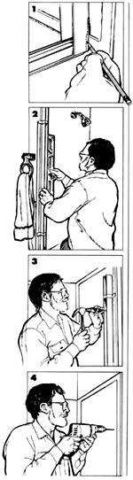
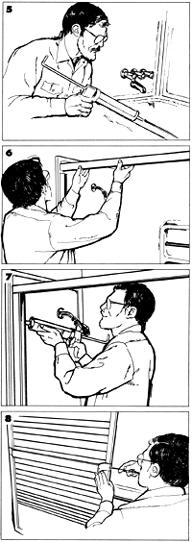
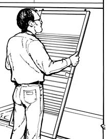

DoorShop Short
1 First, go over the manufacturer-supplied instructions carefully; the steps that follow should clarify and augment the directions specific to your door. Begin by measuring the distance between the facing walls of the tub enclosure, but don't cut the lower sill of the door frame until you've trial-fit the wall jambs. Any contours on the wall or at the corners will require that you mark, then cut or file, the sill and jambs so they meet the wall squarely. Use a fine-toothed hacksaw to make your cuts.
2 Temporarily fasten the sill and jambs in place with masking tape. Use a level to plumb the jambs, then mark the location of the jamb holes and the position of the sill with a soft lead pencil.
3 Use a sharp center punch to dimple the drilling marks. If the jambs are to be fastened through ceramic tile, nick the glaze by tapping the punch lightly, taking care not to hammer the tile with enough force to crack it.
4 Drill the jambmounting holes with the proper size of bit. A standard high-speed twist drill can be used on fiberglass, vinyl and wallboard panels. Use a masonry bit for ceramic tile. Insert screw anchors into the holes if they're called for.
5 Fill the caulk groove on the underside of the sill with silicone or latex sealant. Apply a second bead of caulk to the tub ledge within the marked lines, or to the flat part of the sill, next to the groove. Set the sill in place, then fasten the jambs to the walls with the screws provided.
6 Measure the distance between the walls just above the jambs, then cut the top track slightly shorter than this dimension to allow for clearance within the frame. Set the track into the top of the jambs.
7 Now, or after the doors are hung, run a continuous bead of caulk along the joint between 1) each jamb and the wall, 2) the ends of the sill and the jambs and 3) the sill's inner flange and the tub ledge.
8 Install the door hardware and accessories. Depending on your style of door, these may include handles, rollers, latch tabs and a towel bar.
9 Set the door panels into the rails of the top track, then adjust the rollers so the edge of each door is parallel to the wall opposite the shower head. From inside the tub, fasten the lower door guides, leaving enough clearance so the panels don't bind in motion. Attach the bumpers to the wall jambs.
|
 |
 |
 |